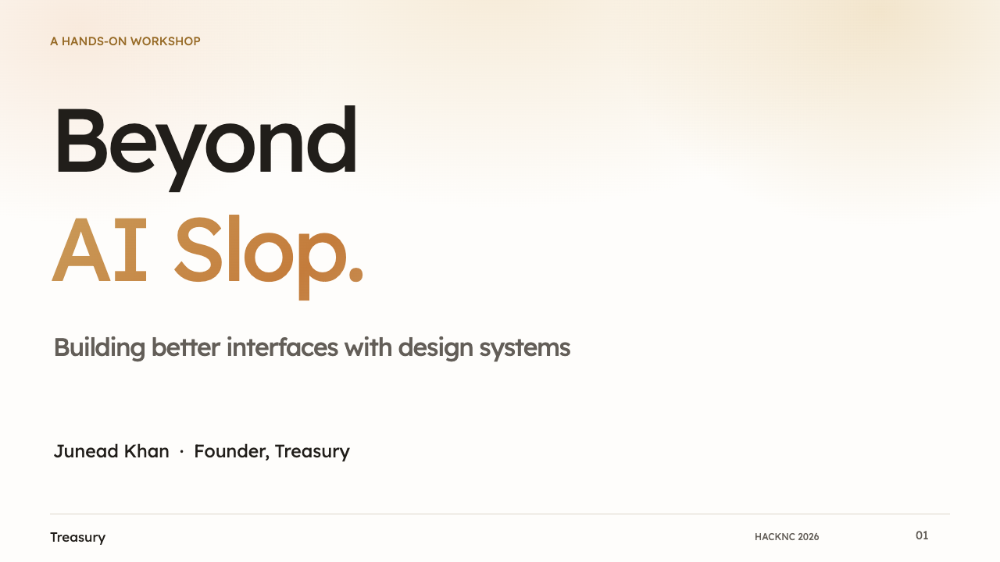
Beyond AI Slop
Beyond AI Slop: Building Better Interfaces With Design Systems. Junead Khan, Founder, Treasury.
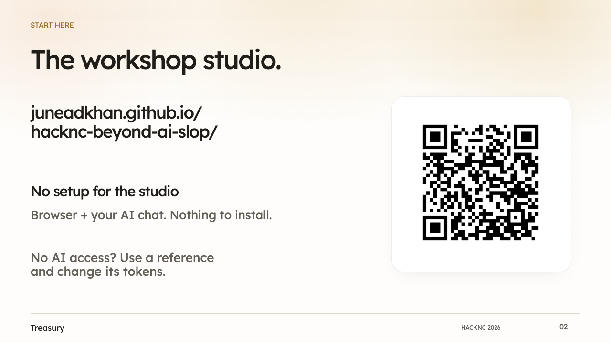
The workshop studio.
No setup for the studio — Browser + your AI chat. Nothing to install.
Open https://juneadkhan.github.io/hacknc-beyond-ai-slop/. No AI access? Use a reference and change its tokens.
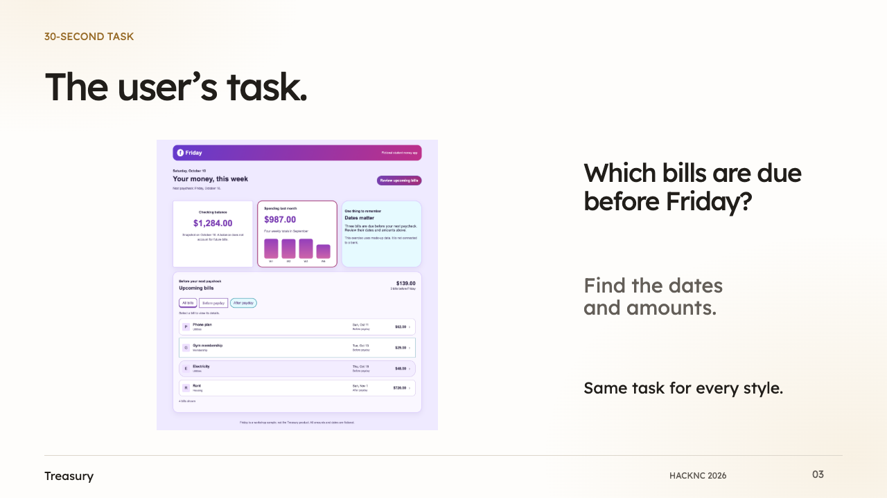
The user’s task.
Which bills are due before Friday? Find dates and amounts in the original app.
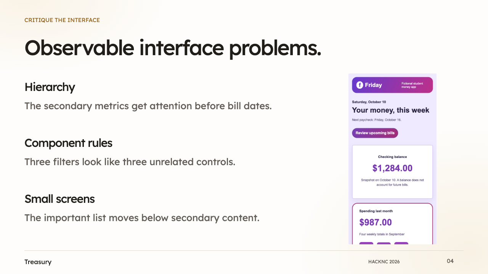
Observable interface problems.
Hierarchy — The secondary metrics get attention before bill dates.
Component rules — Three filters look like three unrelated controls.
Small screens — The important list moves below secondary content.
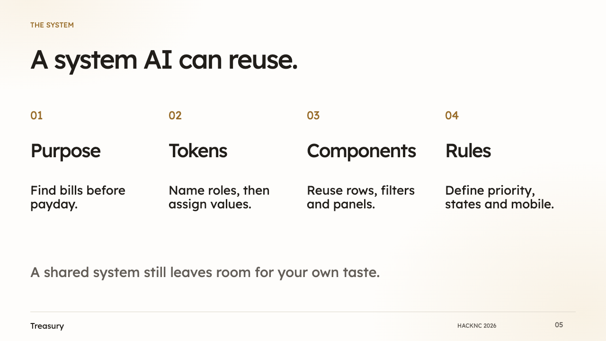
A system AI can reuse.
Purpose: Find bills before payday.
Tokens: Name roles, then assign values.
Components: Reuse rows, filters and panels.
Rules: Define priority, states and mobile.
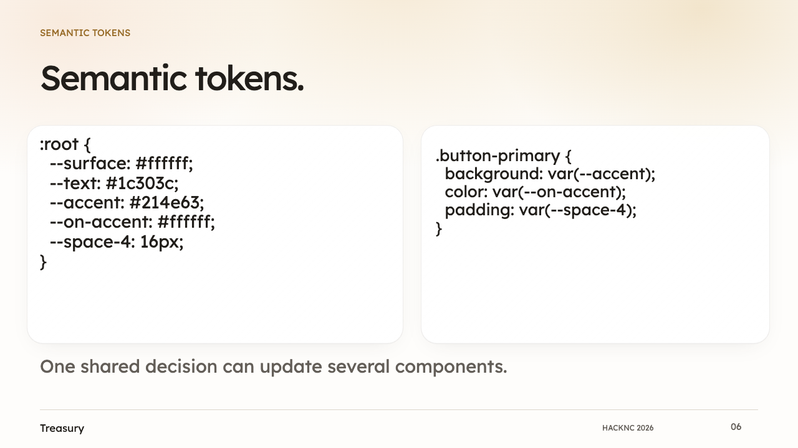
Semantic tokens.
Use :root semantic variables. Example --accent is consumed by .button-primary background and --on-accent by text.
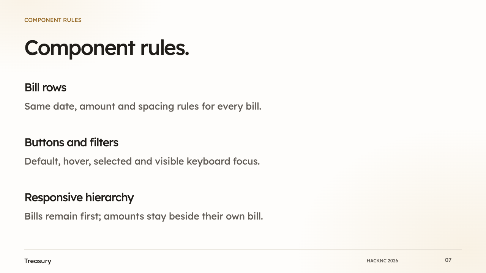
Component rules.
Bill rows — Same date, amount and spacing rules for every bill.
Buttons and filters — Default, hover, selected and visible keyboard focus.
Responsive hierarchy — Bills remain first; amounts stay beside their own bill.
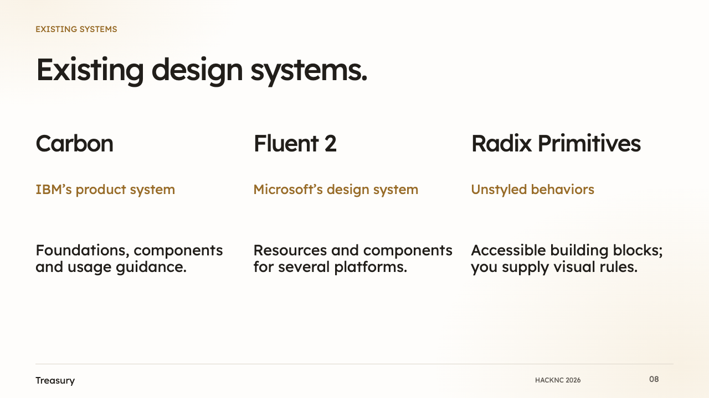
Existing design systems.
Carbon. IBM’s product system. Foundations, components and usage guidance.
Fluent 2. Microsoft’s design system. Resources and components for several platforms.
Radix Primitives. Unstyled behaviors. Accessible building blocks; you supply visual rules.
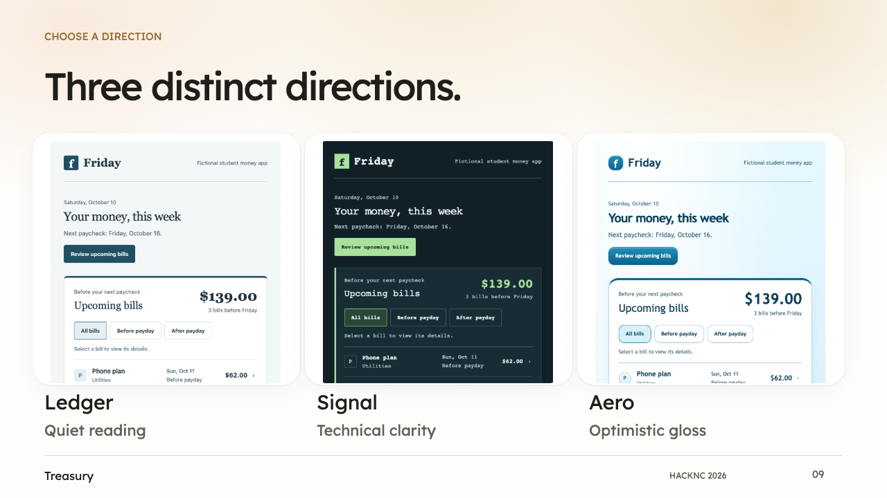
Three distinct directions.
Ledger: Quiet reading
Signal: Technical clarity
Aero: Optimistic gloss
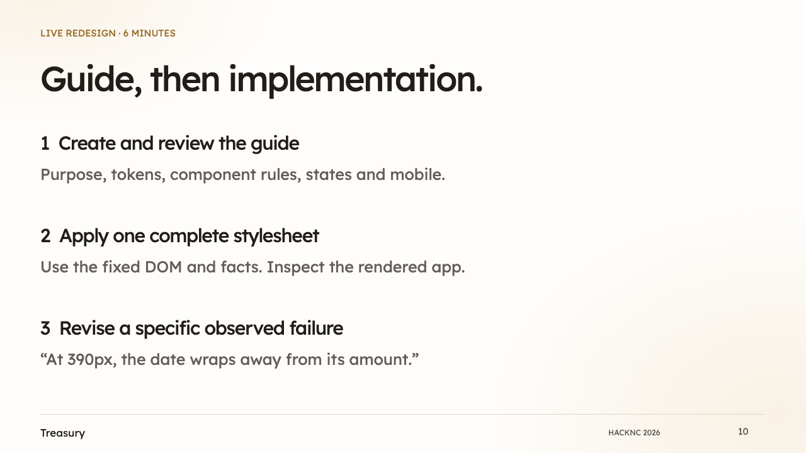
Guide, then implementation.
1 Create and review the guide — Purpose, tokens, component rules, states and mobile.
2 Apply one complete stylesheet — Use the fixed DOM and facts. Inspect the rendered app.
3 Revise a specific observed failure — “At 390px, the date wraps away from its amount.”
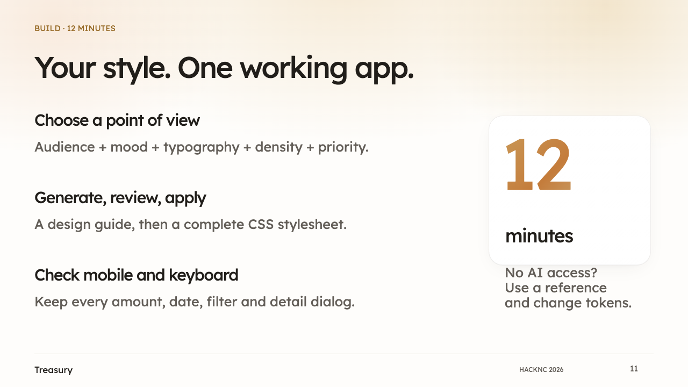
Your style. One working app.
Choose a point of view — Audience + mood + typography + density + priority.
Generate, review, apply — A design guide, then a complete CSS stylesheet.
Check mobile and keyboard — Keep every amount, date, filter and detail dialog.
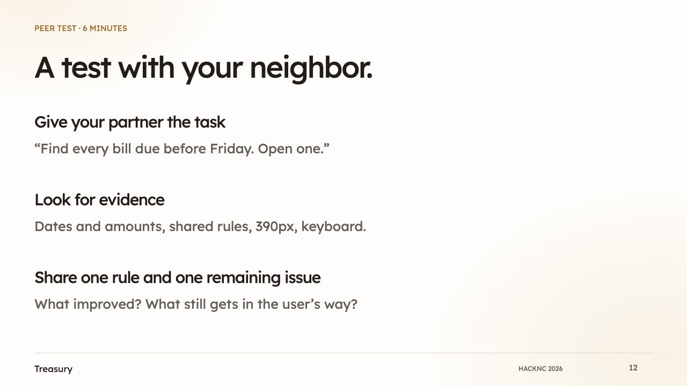
A test with your neighbor.
Give your partner the task — “Find every bill due before Friday. Open one.”
Look for evidence — Dates and amounts, shared rules, 390px, keyboard.
Share one rule and one remaining issue — What improved? What still gets in the user’s way?
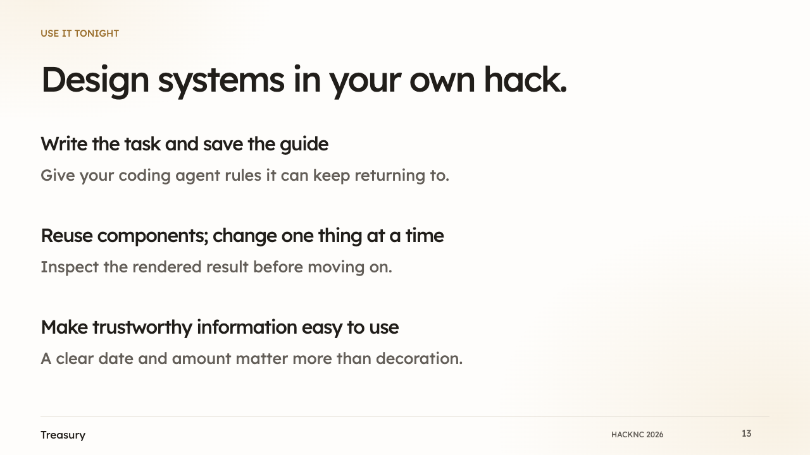
Design systems in your own hack.
Write the task and save the guide — Give your coding agent rules it can keep returning to.
Reuse components; change one thing at a time — Inspect the rendered result before moving on.
Make trustworthy information easy to use — A clear date and amount matter more than decoration.
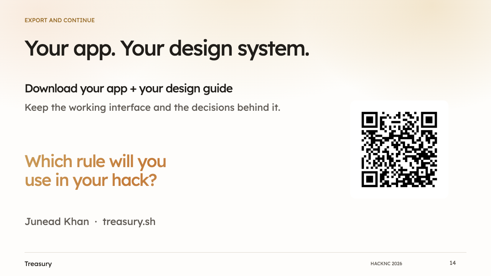
Your app. Your design system.
Download your app + your design guide — Keep the working interface and the decisions behind it.